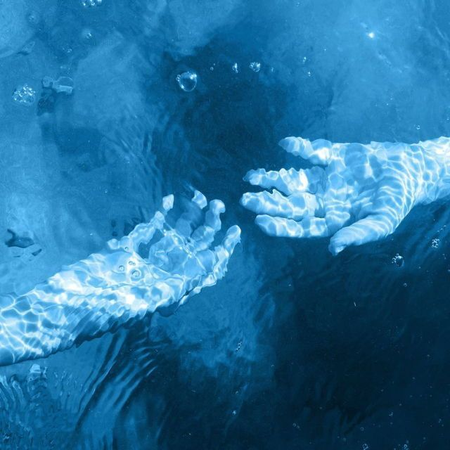

SUEÑO ETERNO

Nos topamos con una sirena
Te ha encantado con su canto
y te ha llevado a un lugar que
desconosco
Lamento no poder hacer nada por ayudarte
Haz caido en un sueño eterno
Nunca podrás despertar, tu cuerpo
sigue vivo, pero nadie sabe por cuanto tiempo
Volver a soñar